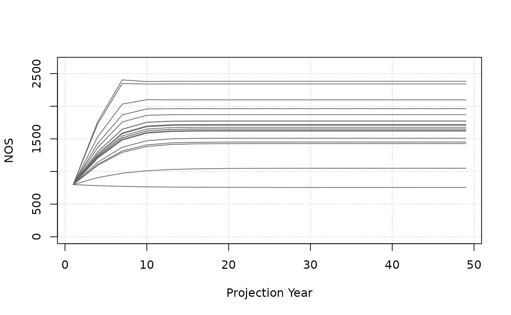
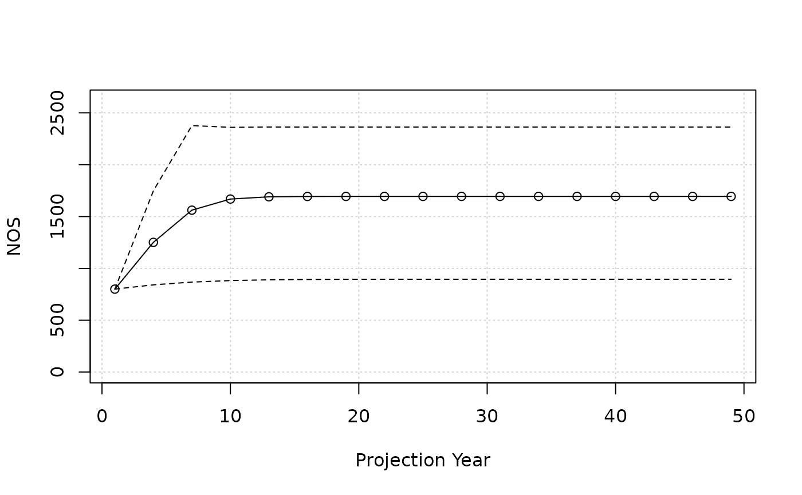
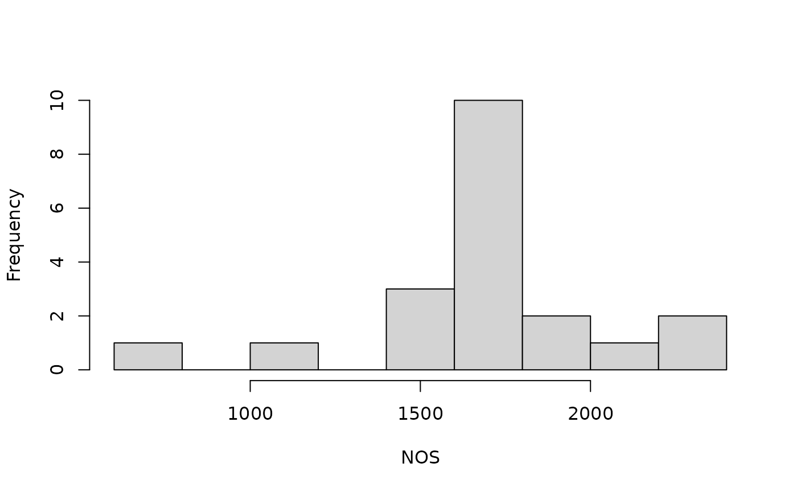

Operating model basics
This tutorial is an introduction to the basic mechanics of working with the salmonMSE projection model.
The operating model is an object where we put parameters describing the life history of our case study and the management strategy to be evaluated.
In R, the operating model is an S4 object of class SOM.
We can view the documentation with:
The SOM object is built out of constituent objects that
organizes the inputs and different management levers. Creating a full
SOM looks something like this:
# Note: demonstration only, this code chunk will not work
SOM <- new(
"SOM",
Bio = Bio,
Habitat = Habitat,
Hatchery = Hatchery,
Harvest = Harvest,
Historical = Historical
)We’ll work with 5 smaller objects (Bio,
Habitat, Hatchery, Harvest, and
Historical), each of which are S4 objects with pre-defined
input slots. Each also has its own documentation page with the necessary
description and dimensions of the input object (arrays, matrices, etc).
For example, access the documentation for the Bio object
with:
class?BioWhile we need to create all five objects, we may carefully work with as few as 1-2 objects depending on the case study, but others may not be relevant, for example, we are not evaluating hatchery production.
Let’s start simple with a model that implements a fishery harvest rate.
Simple case study
Bio object
The Bio object component of the operating model
describes the basic biology (maturity, lifespan) of the population. In
general, we need to describe what happens in each age class.
Here’s the first example, where we will fill in the slots in line-by-line:
nsim <- 20
SAR <- 0.01
set.seed(4389)
kappa_mean <- 3
kappa_sd <- 0.5
kappa <- EnvStats::rnormTrunc(nsim, kappa_mean, kappa_sd, min = 1, max = Inf)
Bio <- new("Bio")
Bio@Name <- "Prototype"
Bio@maxage <- 3
Bio@p_mature <- c(0, 0, 1)
Bio@SRrel <- "Ricker"
Bio@kappa <- kappa
Bio@Smax <- 1000
Bio@Mjuv_NOS <- c(0, -log(SAR))
Bio@fec <- c(0, 0, 5000)
Bio@p_female <- 0.5Alternatively, the Bio object can be filled in one
call:
nsim <- 20
SAR <- 0.01
set.seed(4389)
kappa_mean <- 3
kappa_sd <- 0.5
kappa <- EnvStats::rnormTrunc(nsim, kappa_mean, kappa_sd, min = 1, max = Inf)
Bio <- new(
Class = "Bio",
maxage = 3,
p_mature = c(0, 0, 1),
SRrel = "Ricker",
kappa = kappa,
Smax = 1000,
Mjuv_NOS = c(0, -log(SAR)),
fec = c(0, 0, 5000),
p_female = 0.5
)The information contained in this object:
- The lifespan is 3 years
- All fish mature at age 3
- Natural-origin juvenile marine survival is 0.01, occurring between age 2 to 3
- 50% of spawners are female, each with fecundity of 5 thousand eggs
- The density-dependence of the population is described with a Ricker stock-recruit function. The productivity parameter (kappa) is stochastic over 20 simulations with an average of 3 adults/spawner. The Smax parameter is 1,000 spawners.
There’s also some other default parameters that we are not discussing
(for example, en-route survival to spawning grounds is 1, see
class?Bio).
Harvest object
In the Bio object, we have egg-juvenile survival
described in the Ricker stock recruit relationship, and juvenile marine
survival is 0.01.
Next, we describe the exploitation rate in the fishery in the
Harvest object:
Harvest <- new(
"Harvest",
u_preterminal = 0,
u_terminal = 0.2,
vulT = c(1, 1, 1)
)The information in this object:
- There is no preterminal marine fishery exploitation, i.e., fishing on juveniles
- The terminal exploitation rate is 0.2
- The terminal fishery selects all ages equally (vulnerability is identical for all ages, but note that only age-3 fish return and are available to the fishery in the first place).
Other objects
We have to specify the Hatchery, Habitat,
and Historical objects. However, we don’t have a hatchery
and we don’t model individual freshwater life stages. Thus, our
Hatchery, Habitat objects are quite
simple:
# Set releases to zero to turn off hatchery
Hatchery <- new(
"Hatchery",
n_yearling = 0,
n_subyearling = 0
)
# Use flag to be explicit about assumptions
Habitat <- new(
"Habitat",
use_habitat = FALSE
)We will simulate with 1,000 juveniles at the start of the projection:
# Set number of juveniles at beginning of simulation
Historical <- new(
"Historical",
InitNjuv_NOS = 1000,
InitNjuv_HOS = 0
)Run projection
We create the SOM object now that we have individual
objects completed:
proyears <- 50 # Specify the number of projection years
SOM <- new(
"SOM",
nsim = nsim,
proyears = proyears,
Bio = Bio,
Habitat = Habitat,
Hatchery = Hatchery,
Harvest = Harvest,
Historical = Historical
)Then, we run the projection with a call to
salmonMSE().
Generally, it’s a good idea to save the output, especially for larger models and extensive analyses.
SMSE <- salmonMSE(SOM)
#saveRDS(SMSE, "1-simple.rds")Reporting
We then generate a markdown report of the projection with
report():
report(SMSE)Exploring output
The output (class SMSE) from the projection contains
various arrays of the state variables during the projection. For
example, this slot contains the projected natural-origin spawners (NOS)
in an array by simulation, stock, age, and year:
SMSE@NOSAll other slots can be found with:
slotNames(SMSE)The corresponding documentation is found with:
class?SMSEFigures
There are plotting functions to help us explore the output.
plot_statevar_ts() generates a time series figure with
base graphics. By default, it generates line plots for each stochastic
simulation in the projection:
plot_statevar_ts(SMSE, "NOS")
Adding an additional argument gives us a summary quantile by year:
plot_statevar_ts(SMSE, "NOS", quant = TRUE)
We can also explore the distribution of outcomes within an individual
year. plot_statevar_hist() returns a histogram. By default,
it plots the values in the last year of the projection:
plot_statevar_hist(SMSE, "NOS")
And again, an additional argument gives us control to plot distributions in other projection years:
plot_statevar_hist(SMSE, "NOS", y = 1)All these figures return results from a single model run. We will explore how to compare model runs in Tutorial 3.